What is Hibernoglyphics?
Hibernoglyphics is a pseudo-syllabic writing system for Irish. References to consonants and vowels below generally deal with a simplified version of the sounds of Classical Modern Irish, which formed the basis of Irish spelling before the mid-20th century. Similarly, all Irish spellings mentioned below will be pre-reform spellings.Inspiration
The main source of inspiration for radically rethinking how to write in Irish was AnLoingseach's YouTube channel. I hope I have not too closely copied his orthography :)
In designing this writing system I have taken inspiration from a variety of ancient and modern writing systems including Ogham, Latin, Egyptian hieroglyphs, Korean and Japanese.
Introduction
Let's start with a very simple syllabary, a simplified version of consonant-vowel combinations in Irish. These all originate as pictograms I created.
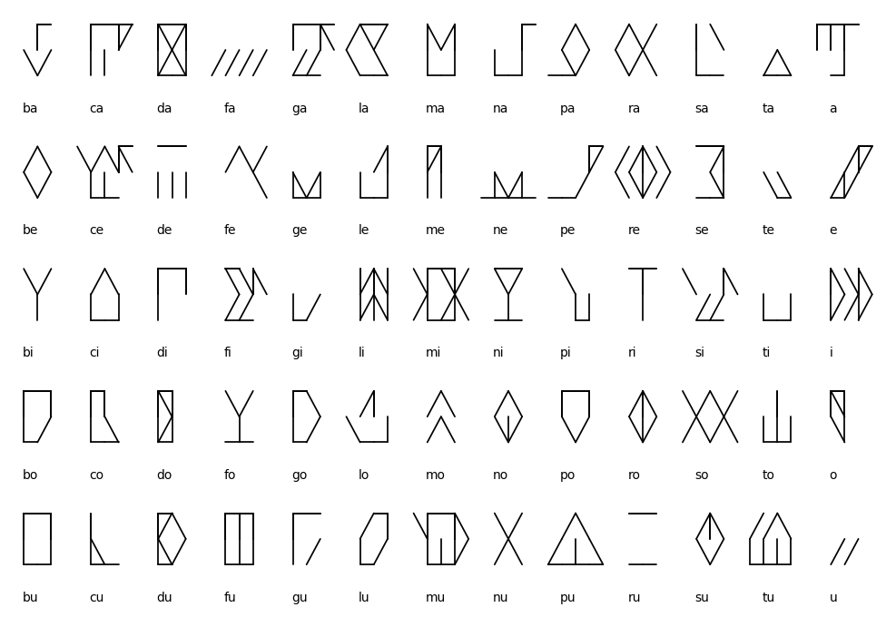First word
With these we can already write some simple words. Here's bata "bat" (the tool, not the animal). We write it as bata:
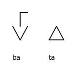Broad and slender
However, in Irish there are actually two versions of every consonant: broad and slender. Broad consonants are ones with the vowels a, o and u written before and after them, while slender consonants are ones written with the vowels e or i written before and after them. The broad and slender versions of each consonant are pronounced differently, with broad sounds often sounding like a "w" sound follows them and slender sounds often sounding like a "y" sound follows them.
However, the fact that the consonant quality is indicated by vowels both before and after it means that often at least one of those written vowels is redundant (usually the first one). Thus words like maide "stick" can be written in our system as made:
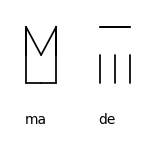Lenited consonants and long vowels
In Irish consonants come in two forms, unlenited and lenited. The lenited consonants can be treated as "weakened" versions of the base consonants, and are usually written with a following h in Modern Irish. However for l, n and r, a single letter alone instead represents the lenited variant, with a double letter (i.e. ll, nn or rr) or a single, word-initial letter representing the unlenited sound. Historically lenition has been written using a dot above a consonant, e.g. for ch one would write ċ.
Irish has both short and long vowels, the short vowels being written using the letters a, e, i, o and u, and the long vowels being written using an acute accent: á, é, í, ó and ú.
In our system we will use a dot above a glyph for a lenited version of a letter, and we will make l, n and r stand for the unlenited variants of those letters (e.g. what is written non-word-initially in Irish as doubled ll, nn and rr), while the same glyphs with the lenition dot will stand for the lenited sounds (e.g. what is written non-word-initially in Irish as single l, n and r). In annotations below glyphs, l will stand for unlenited ll while lh will stand for lenited l, and the same will apply to the lenited and unlenited n and r too.
A syllable can of course have both a lenited initial consonant and a long vowel. Below are the four such possible combinations for the syllable ta (ta, tá, tha and thá):
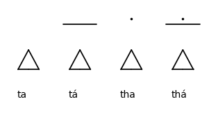Word final consonants
For word final consonants, we can add a dummy vowel after, which will be either o or i depending on whether the preceding consonant is broad or slender. This does not cause any ambiguity as neither short /i/ nor short /o/ can occur in an unstressed position in Irish.
So beag becomes bego (remembering the rule about removing redundant vowels, here we write the ea as simply e).

Similarly, we can write the word méid "amount" as médi.

Unstressed word internal vowels and unstressed words
Word-internal /ə/ in Irish can be spelt either a, ai, ea or i. In our system, in stressed words, unstressed vowels are always written as either a or e depending on the quality of the preceding consonant. Thus unstressed graphical a and ai both become a, while unstressed graphical ea and i are both written in our system as e. The quality of the following consonant does not matter. Remember, the i in unstressed syllables has been repurposed as a dummy vowel! For example, the name Pilib "Phillip" is written as pilhebi, not *pilhibi which would correspond to *pilb.
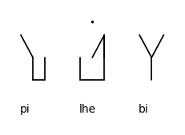For some unstressed function words like a, an, i(n) and is one can write the /ə/ as either a or i depending on whether you want to be more consistent in your analysis of the unstressed vowels, or want to stick to Classical or modern Irish spelling conventions that write the quality the vowel had in Old Irish to allow some disambiguation of homophonic words when reading.
Consonant clusters
For word initial, word medial and word final consonant clusters we break them up with either o or i, depending on the quality of the cluster, as above.
Note that for word initial consonant clusters, there is potential ambiguity, for example solha could represent either sola or sla, while silhe could represent either sile or sle. This is resolved by putting a dot below the glyph when the vowel is not to be pronounced. This underdot is ONLY to be used in stressed syllables, which are usually word initially. It is not required in unstressed syllables. In annotations this unpronounced vowel is written with a following h (not to be confused with the h of lenition, which only occurs after consonants!). Below are the words glas gohlhaso "green" and gorm gorhomo "blue":
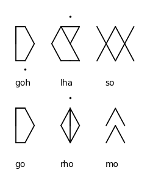ia, ua and ao(i)
The diphthongs ia and ua in Irish (usually) originate from historical long é and ó. Often in declensions of Irish nouns you see alteration between ia and é(i): pian "pain" (nominative singular) vs péin "pain" (dative singular). Similarly, in standard Irish one of the main words for "new" is written as nua which is most commonly pronounced nó in Munster.
Thus we can write ia as ê and ua as ô, which will be represented with a circumflex above the glyph. Note that since these vowels are already long, the circumflex will never co-occur with the long vowel mark. In annotations these will be written as ía and úa.
Below are the words pian, péin, nua and nó:
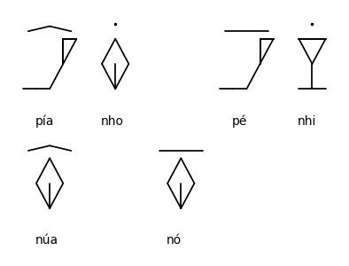The vowel written as ao in Classical Modern Irish represented /əː/, in modern dialects it is variously pronounced /iː/, /eː/ or /ɯː/. It originates in Old Irish /ai̯/, /oi̯/ and /ui̯/. We will represent it as â, using the corresponding glyph with a, and with the circumflex diacritic. The trigraph aoi will be treated as ao followed by a slender consonant, although word-finally this will result in us writing things like lao and laoi the same, although there are few minimal pairs that distinguish them. Words like tae with broad /eː/ will be treated as if they were written with ao.
In annotations, this vowel will be written as áo. Like above, the circumflex will not co-occur with the length mark as ao is always long.
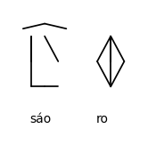U-affected vowels
Historically in Irish many vowels combined with a following u sound to form diphthongs. These diphthongs persisted into Classical Modern Irish, and today's Irish words will be harder to write if we don't consider them. This extra "u" sound is represented by a small notch under the glyph. This does not co-occur with the vowel deletion dot mentioned above. Below are the words seo seu "this", seó séu "show" (noun), aniu aniu "today" (note that this is usually written inniu in current spelling, and see the section above on writing the vowels in unstressed syllables) and fiú fíu "worth". Note that long eó is usually spelt eo in standard Irish, only seo, deoch and eochair have short graphical eo in standard spelling.

Pre-nasalisation
Eclipsed words can be represented by an L-like shape above the glyph representing the initial syllable of a word. Word-medially and word-finally this instead represents a homorganic nasal before the consonant. In annotations this diacritic is written as a superscript small caps ᶰ. Below are the words lampa laᶰpa "lamp", ceanntar ceᶰtarho "area" and teanga teᶰga "tongue"/"language":
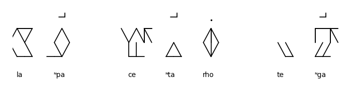Stacking glyphs
Glyphs in short, simple words are generally stacked bottom to top. Below are the stacked glyphs for dearg derhogo "red", buidhe budhe "yellow", glas gohlhaso "green", gorm gorhomo "blue", bán bánho "white" and dubh dubho "black". At this point, annotation becomes more of a hindrance than a help and so it will be omitted from here on:
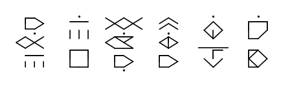Morphemes
This approach would lead to very squeezed stacks of glyphs, that is why only glyphs that form part of the same morpheme are stacked. A morpheme is the smallest unit of meaning in a language, for example in the English word "cars", both "car" and "-s" are morphemes.
In our system, morpheme boundaries in a word will be seperated with a dot in between the two stacks of glyphs. Note that a "stack" can have a single glyph, or often up to four glyphs. Spaces between words are not represented in our system as they are implied in the gap between stacks, when not seperated by the morpheme seperator dot.
Below are the words busanna buso-ana "buses" and móra mórho-a "big" (plural adjective):
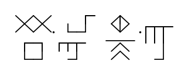Some common consonant clusters
The most complex initial consonant clusters are ones made up of sp, st or sc, plus l or r. To reduce the maximum needed number of glyphs needed to represent a syllable onset from three to two, we can make unique glyphs for s[p|t|k] plus a vowel.
Similarly, we can make a unique glyph for the combination cht followed by a vowel (including dummy vowels), which often occurs as an ending in nouns. The combination chtu never occurs in our system but I have added it for completeness.
Below are the 20 extra glyphs needed for this:
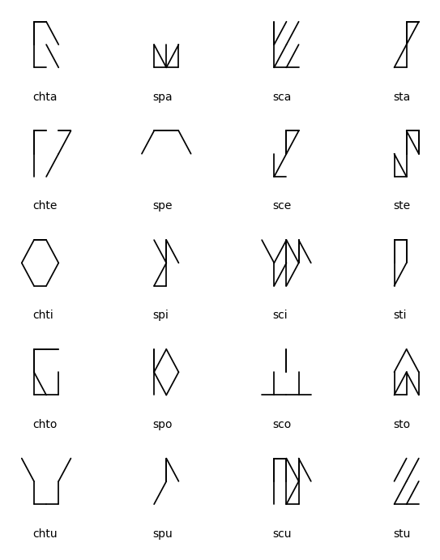Short words
Some short words will be represented using simplified versions of their glyphs. These glyphs will not take up the space of a regular stack but will be placed in the space to the left of a stack. They can also be overlaid on top of each other.
In the first row below are the words ag ago "at", ar arho ("on"/past question particle), an anho (singular definite article, question particle and many other uses) and as aso "out of".
In the second row are the words na na (plural definite article), go go ("to"/adverb marker etc), do do ("to"/past tense marker) and as an aso anho "out of the". This last one is made up of two short word glyphs overlaid on top of each other, many other combinations are possible. Note that some of these short words could also be written with an initial i instead of a were they to be written out as full words.
All these symbols are followed by the glyph da for reference:
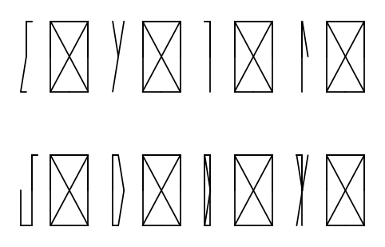A note on modern Irish words
Some modern Irish words, especially modern borrowings from English, will have to be adapted to our system. Initial h- in words like hata "hat" will be written as sh. Initial v- in words like vóta "vote" (noun) will be written as bh (this way of writing such words was historically very common in Irish).
Words like veain pose a challenge. I suggest that (C)eai is transcribed as (C)ea, i.e. as if it were two syllables. Similarly, words like Seán (personal name), historically bisyllabic Sea.án, can be written as seánho, as if eá were still two syllables. Words like sleán "turf-spade" can be treated the same way, even though the eá there was not historically bisyllabic.
For word initial j- one can write dihsih-. For z, just write it as s, it's how many strong Irish speakers say it anyway.
A short text
At this point, armed with the charts of basic and extended glyphs, you should be able to attempt to decode at least the start of this text. It is the first 20 lines of the 18th century Irish poem Cúirt an Mheadhóin Oidhche Cúriti anho Mhedhónhi Odhiche "The Midnight Court" by Brian Merriman. The first 10 lines are on the left hand side, followed by the next 10 lines on the right hand side.
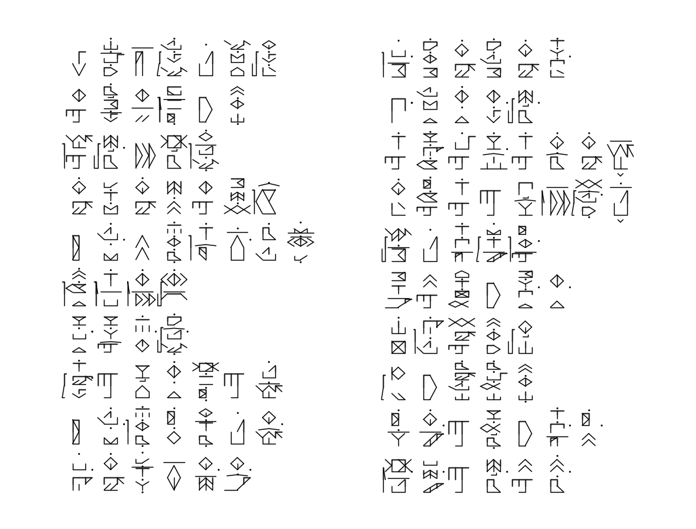